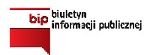
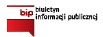

SZKOLNY OŚRODEK KARIERY
Zasoby
W Szkolnym Ośrodku Kariery uczniowie korzystają z serii multimedialnych programów komputerowych oraz materiałów w wersji drukowanej, które są pomocnym narzędziem w poznaniu istotnych zagadnień dla kształtowania kariery zawodowej oraz trafnego wyboru przyszłego zawodu:
- PIRAMIDA KARIERY 3 - to seria składająca się z 6 multimedialnych programów komputerowych obejmujących istotne zagadnienia dla kształtowania kariery zawodowej oraz trafnego wyboru przyszłego zawodu. Seria została zaplanowana w jedną, spójną całość, logicznie następujących po sobie programów – zagadnień. Wskazane jest zapoznanie się z całą serią w podanej poniżej kolejności:
- Poznaję i odkrywam samego siebie
- Planowanie kariery zawodowej
- Ścieżki edukacyjne
- Zawód… Jak to łatwo powiedzieć
- Przygotowanie do spotkania z pracodawcą
- Ja i pracodawca. Rozmowa kwalifikacyjna
- Indywidualny Planer Kariery v. 2.0 jest narzędziem pozwalającym na zaplanowanie indywidualnej wizji kariery zawodowej, czyli przygotowanie osobistego programu edukacyjno-zawodowego.
IPK zbudowany jest z 4 modułów, a najważniejszym jest interaktywny IPD, pozwalający na zaprojektowanie osobistego planu działania.IPD (Indywidualny Plan Działania) został przygotowany w formie kalendarza z podziałem na 7 dni tygodnia:
Drugi moduł programu to Klasyfikacja zawodów i specjalności – dzięki niej poznać można strukturę świata zawodów, który został podzielony na grupy: wielkie, duże, średnie i elementarne. W tych ostatnich mamy do czynienia z konkretnymi zawodami i specjalnościami oraz ich kodami.
Następny moduł, Świat zawodów, to charakterystyki 556 zawodów szkolnictwa zawodowego, średniego i wyższego, przygotowane według jednolitego, spójnego schematu. Znajdują się tu informacje odnośnie zadań i czynności , środowiska pracy, wymagań zawodu, informacje z analizy rynku pracy, preferowanego wykształcenia. To niezwykle bogate źródło wiedzy o zawodach. Informacje na temat interesującego zawodu można wydrukować.
Ostatni moduł jest Poradnikiem dla niepełnosprawnych składającym się z 4 części.
- Młodzieżowe Portfolio Kariery, w wersji drukowanej - to indywidualna forma dokumentowania pracy każdego ucznia podczas procesu samopoznania, poznawania mechanizmów rynku pracy, świata zawodów i wreszcie podejmowania decyzji edukacyjno – zawodowych. Portfolio przeznaczone jest dla uczniów szkół ponadgimnazjalnych.
Młodzieżowe Portfolio Kariery, zawierając bogaty materiał do analizy, jest niezbędnym narzędziem w procesie efektywnego planowania ścieżki kariery zawodowej.
- Przewodnik po kształceniu zawodowym v 2.0 - to kompendium wiedzy o systemie kształcenia zawodowego w Polsce.
W przewodniku można znaleźć odpowiedzi na pytania: czym jest kształcenie zawodowe, dlaczego warto kształcić się w zawodzie, jakie korzyści z tego wynikają. Liczne argumenty obalają mity nt. kształcenia zawodowego. Znajdziemy także wyjaśnienie czym są Krajowe Ramy Kwalifikacji.
Przewodnik prezentuje kształcenie zawodowe prowadzone na różnych poziomach kształcenia: zasadniczym, średnim, wyższym.
Zawiera informacje o nowym sposobie zdobywania uprawnień zawodowych (kwalifikacji zawodowych), rodzajach egzaminów zawodowych (egzaminie: zawodowym, inżynierskim, kwalifikacyjnym na tytuł czeladnika i mistrza w zawodzie), etapach egzaminów oraz informacje, gdzie takie egzaminy można składać.
Przewodnik w czytelny sposób pokazuje możliwe do wyboru ścieżki kształcenia po szkole zawodowej, technikum oraz szkole policealnej (zawiera m.in. przejrzysty schemat możliwych ścieżek edukacyjnych w Polsce).
W przewodniku znajdziemy również informacje dotyczące staży, praktyk, dokształcania zawodowego poza szkołą – informacje o kształceniu ustawicznym, procesie świadomego uczenia się, podnoszeniu kwalifikacji (baza linków do szkoleń, Kwalifikacyjnych Kursów Zawodowych, studiów podyplomowych, Izb Rzemieślniczych).
- Przejmij inicjatywę! Przewodnik po przedsiębiorczości - jest narzędziem mającym na celu wprowadzenie w tematykę przedsiębiorczości, ekonomii i pieniądza oraz wspomagającym rozwój postawy przedsiębiorczej.
Przewodnik kierowany jest do uczniów gimnazjów oraz szkół ponadgimnazjalnych a także osób zainteresowanych tą tematyką.
- Spacery po zawodach - to seria multimedialnych programów będących bogatym źródłem informacji o zawodach z Przewodnika po Zawodach.
Zawody zostały pokazane w postaci multimedialnych prezentacji, w których ujęto:
- zadania i czynności robocze
- wymagania psychologiczne, fizyczne, zdrowotne
- środowisko pracy
- warunki podjęcia pracy w zawodzie
- możliwości zatrudnienia
- możliwości awansu
Prezentacje zachęcają do zastanowienia się nad tym, kim chcę zostać, a także pomagają lepiej zrozumieć specyfikę prezentowanych zawodów.
- „PERSPEKTYWY EDUKACYJNO – ZAWODOWE” - Narzędzie diagnozy, informacji i aktywizacji zawodowej (aplikacja komputerowa na płycie DVD):
- Perspektywy Edukacyjno-Zawodowe APLIKACJA KOMPUTEROWA dla uczniów szkół gimnazjalnych i ponadgimnazjalnych: (GRA DIAGNOSTYCZNA - diagnozująca zainteresowania zawodowe, predyspozycje zawodowe i kompetencje przedsiębiorcze oraz generująca rekomendacje zawodowe, GALERIA ZAWODÓW - z multimedialnymi prezentacjami zawodów, PLANER KARIERY - do planowania kariery edukacyjno-zawodowej).
- PAKIET 194 FILMÓW prezentujących ZAWODY SZKOLNICTWA ZAWODOWEGO (na płytach DVD).
- PORADNIK UCZNIA - Perspektywy Edukacyjno-Zawodowe - drukowane materiały.
- Program komputerowy – „Mapa kwalifikacji”.
- „ZAMEK”– „Poznaj swoje predyspozycje zawodowe”:
- „ZAMEK” – Narzędzie do badania predyspozycji zawodowych (wersja elektroniczna i drukowana)
- „ZAMEK” - Karty zawodów i kwalifikacji zawodowych – 201 zawodów (wersja elektroniczna i drukowana)
- „ZAMEK” – Rozpoznawanie predyspozycji zawodowych - Poradnik dla ucznia - (wersja elektroniczna i drukowana).
- Samoocena. Przewodnik multimedialny został stworzony przez specjalistów specjalnie na potrzeby pracy z klientem wymagającym wsparcia w obszarze samooceny i poczucia własnej wartości. Program ten jest niezastąpionym narzędziem szczególnie dla doradców zawodowych, pedagogów, psychologów i szkoleniowców przy pracy na zasobach klienta, w budowaniu jego pozytywnego wizerunku siebie, w budowaniu adekwatnego poczucia jego własnej wartości. Od pozytywnej samooceny bowiem zależy w dużej mierze sukces w życiu, motywacja do działania i odwaga w pokonywaniu trudności.
- Multimedialny kwestionariusz preferencji zawodowych - to narzędzie w formie programu komputerowego służące do badania preferencji ucznia związanych z wyborem zawodu poprzez określenie zainteresowań, kompetencji społecznych i cech temperamentu. Pomaga ono przy wyborze kierunku kształcenia oraz wyborze zawodu.
Kwestionariusz, przeznaczony dla uczniów gimnazjów i uczniów szkół ponadgimnazjalnych:
- bada zdolności umysłowe z podziałem na 4 rodzaje: werbalne, przestrzenno-techniczne, liczbowe, uwagę, a także podaje przykłady zawodów, w których są one pożądane
- bada czynności lub działania społeczne pozwalające stwierdzić preferencje co do typu kontaktów: dydaktycznych, opiekuńczych, kierowniczo-organizacyjnych, perswazyjnych, a także podaje przykłady zawodów, w których potrzebne są kompetencje społeczne danego rodzaju
- bada cechy temperamentu i warunki fizyczne, które należy uwzględnić przy podejmowaniu decyzji o wyborze zawodu
Wyniki można wydrukować, a także gromadzić zapisując wraz z danymi osób badanych (wiekiem, płcią i danymi demograficznymi).
- Test umiejętności rozpoznawania mocnych i słabych stron - jego celem jest określenie poziomu umiejętności rozpoznawania swoich mocnych stron w kontekście planowania własnej kariery zawodowej i uczenia się przez całe życie.
W teście wykorzystano jedną ze skuteczniejszych metod określania potencjału (w tym osobowego) – analizę SWOT. Dzięki SWOT jesteśmy w stanie nie tylko lepiej poznać samych siebie, ale również zrozumieć które z obowiązków rozwijają nasze talenty, a które mogą stanowić dla nas trudność i wyzwanie. Ponieważ jednocześnie przeanalizowaliśmy możliwości, które stwarza nam środowisko biznesowe, możemy na bazie naszych przemyśleń stworzyć odpowiedni plan rozwoju kariery. Analiza SWOT została w teście wzbogacona o dodatkową skalę: poczucie własnej wartości i umiejscowienie kontroli, które wg teorii psychologicznych wpływają na postrzeganie siebie, swoich zasobów oraz podejmowane działania i dążenie do celu.
- Test „Samoocena zainteresowań zawodowych” - test psychologiczny w formie programu komputerowego. Jest to narzędzie umożliwiające samodzielne poznanie i sklasyfikowanie własnych zainteresowań dotyczących wyboru przyszłego zawodu. Wyniki uzyskane w sześciu skalach zainteresowań stanowią podstawę opracowania indywidualnej ścieżki edukacyjnej i kariery zawodowej. Test ten pozwala na zminimalizowanie możliwości przypadkowego wyboru zawodu.
Oprogramowanie umożliwia przeprowadzenie badania, automatyczne obliczenie wyników oraz uzyskanie wydruku stanowiącego słowny opis wyników. Wyniki testu można też zapisać do pliku, ale także wysłać bezpośrednio na e-mail osoby badanej i/lub e-mail doradcy. Dodatkowo w programie można znaleźć materiały związane z tematyką testu oraz spis przykładowych książek polecanych jako lektura dodatkowa.
- Test preferencji i predyspozycji zawodowych jest jednym z narzędzi wspierających diagnozę obszarów dotyczących możliwości, zainteresowań, predyspozycji, kompetencji, potencjału. Nowa wiedza o sobie zdobyta dzięki pracy z testem, ma pomóc podjąć decyzję o wyborze zawodu lub zweryfikować plany zawodowe. Test ten powstał w wyniku inspiracji teorią Hollanda.
Test preferencji i predyspozycji zawodowych pomoże odpowiedzieć na pytanie jakie są dominujące cechy osobowości zawodowej osoby badanej, jaki rodzaj i styl pracy lubi, jaki rodzaj kontaktów interpersonalnych w różnych sytuacjach społecznych preferuje. Osoba badana dowiaduje się, które z opisanych rodzajów preferencji zawodowych (przedmiotowe, społeczne, przedsiębiorcze, twórcze, wykonawcze, analityczne) są u niej dominujące i w jakich sytuacjach zawodowych prognozują one efektywną adaptację oraz odniesienie sukcesu.
- „Doradztwo Zawodowe w Gimnazjum i Szkole Ponadgimnazjalnej” – pakiet - publikacja pomagająca uczniom wybrać ścieżkę rozwoju i kariery, przygotowująca do wyboru szkoły i wejścia na rynek pracy.
Publikacja składa się z:
- 3 książek: "Poznajemy siebie i nabieramy kompetencji", "Wybieramy zawód" oraz "Znajdujemy wymarzoną pracę",
- 2 płyt CD: "Psychotesty i prezentacje" oraz "Wewnątrzszkolny System Doradztwa Zawodowego",
- 2 gier edukacyjnych: Memo Zawodowiec, Zawodowy Poker.
- „Praca i ja. Przygoda życia" - książka przeznaczona dla uczniów szkół ponadgimnazjalnych.
Rozdział 1. KARIERĘ CZAS ZACZĄĆ!
- O co ta cała afera? – rynek pracy i szanse na karierę zawodową
- Wpisać czy nie wpisać? – tajemnice kreatywnego CV
- Nie daj się zaskoczyć! – przygotowania do rozmowy rekrutacyjnej
- Twoje dokumenty – co zabrać ze sobą na rozmowę o pracę?
Rozdział 2. TWOJE NAJCENNIEJSZE ZASOBY
- Sam daleko nie dojdziesz – umiejętność pracy w zespole
- Co zrobić kiedy Ci się nie chce? – motywowanie siebie i innych
- Jak rozmawiać, aby się dogadać? – komunikacja werbalna i niewerbalna
- Chroń siebie i buduj szacunek – zawiłości asertywności
- Bez planu nie wejdziesz na żaden szczyt ! – ustalanie celów i planowanie dział
- Nie bój się zmian – sztuka podejmowania decyzji
Rozdział 3. W CO WARTO INWESTOWAĆ CZAS?
- Zostań milionerem! – awans i kształcenie całożyciowe
- Co w trawie piszczy? – technologie i wirtualna rzeczywistość
- Czy na pewno nie jestem sprzedawcą? – sprzedaż i marketing.
- Przewodnik "Nauka języków obcych oknem na świat" - multimedialny program komputerowy - kompendium wiedzy o nauce języków obcych. Przewodnik ten w sposób lekki i prosty uzasadnia konieczność nauki języków obcych, podając korzyści, jakie płyną ze znajomości języków.
W Przewodniku użytkownik znajdzie informacje dotyczące metod nauczania języka obcego oraz metod uczenia się, a zamieszczony test preferencji i zestawienie metod pozwalają dobrać optymalną metodę nauczania do własnej metody uczenia się języka obcego tak, by nauka była skuteczna i dawała satysfakcję z pokonywania kolejnych stopni wtajemniczenia. Przewodnik odkrywa przed użytkownikiem sposoby utrzymania motywacji do nauki języka na odpowiednio wysokim poziomie, dzięki którym można spokojnie kontynuować naukę, aż do uzyskania oczekiwanych efektów.
Ponadto w Przewodniku znajduje się również charakterystyka najpopularniejszych języków (angielskiego, niemieckiego, francuskiego, hiszpańskiego, włoskiego, rosyjskiego), których naukę oferują szkoły językowe, w tym informacje dotyczące stopni zaawansowania znajomości języka, certyfikatów możliwych do zdobycia oraz kosztów i możliwości dofinansowania nauki. Użytkownik znajdzie tu także wskazówki podpowiadające, czym należy kierować się, wybierając szkołę językową lub kurs.
Cały program wzbogacony jest o szereg aktywnych linków, dzięki którym użytkownik może uzyskać wiele cennych, dodatkowych informacji. W Przewodniku użytkownik znajdzie także grę edukacyjną, która w zabawny sposób wprowadza w tematykę nauki języków obcych.
- Informatory o zawodach szkolnictwa zawodowego.
- Informatory dla osób poszukujących pracy.
- Literatura dotycząca doradztwa edukacyjno - zawodowego (w wersji drukowanej) – poradniki, książki, czasopisma.
- Ulotki, broszury.

 
